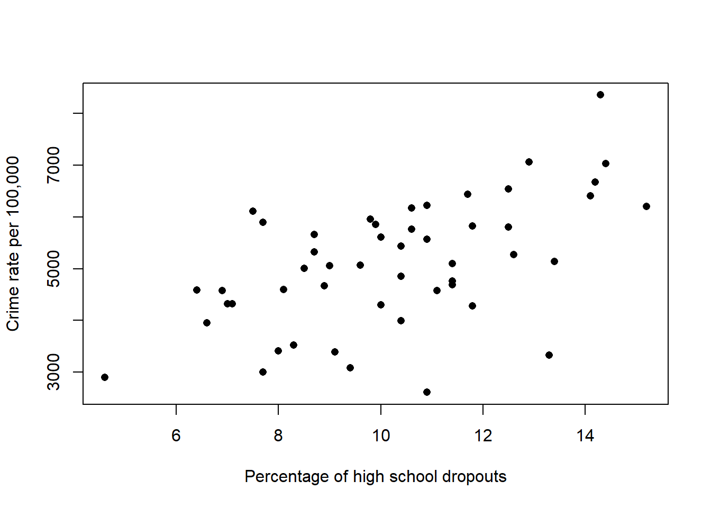

6 Written questions
6.1 Question 1
Just now, we estimated model parameters using R. Below is a conversion of Example 1 in an exam-style written question.
50 US states were investigated in terms of their crime rates (per 100,000 people), which includes crimes such as murder, assault, and car theft. Some demographic information about each state was also recorded, such as the number of police and prisoners per 100,000 people and the percentage of high school dropouts (i.e. 16-19 year olds who were not in school and did not finish the 12\(^\text{th}\) grade). Figure ?? below is a scatterplot of the percentage of high school dropouts \(x\) and the crime rate (\(Y\)).

Some summary statistics are also calculated.
Comment on the relationship between the percentage of high school dropouts and the crime rate.
Calculate the sample correlation coefficient and provide an interpretation of this value.
The following linear model, Model 1, was fitted to the data, with the crime rate as the response (\(Y\)) and the percentage of high school dropouts as the predictor (\(x\)):
Model 1: \(\mathbb{E}(Y_i) = \beta_0+\beta_1 x_i, \quad \text{Var}(Y_i) = \sigma^2\).
Using the sum of squares function, \(\mathcal{Q}(\beta_0, \beta_1) = \sum_{i=1}^{n}(Y_i-E(Y_i))^2\), derive the least squares estimators for \(\beta_0\) and \(\beta_1\).
You do not need to confirm that you have found a mimimum.
- Use the summary statistics to calculate the least squares estimates for \(\beta_0\) and \(\beta_1\).
6.2 Question 2
Consider the following model:
This model has been proposed for the potato example used in the lectures.
Write this model in matrix notation, \(\mathbb{E}(\mathbf{Y}\)) = \(\mathbf{X}\boldsymbol{\beta}\), clearly identifying the elements of \(\mathbf{Y}\), \(\mathbf{X}\) and \(\boldsymbol{\beta}\).
Identify formulae (in terms of the \(Y_i\)'s and \(x_i\)'s) for the elements of \(\mathbf{X}'\mathbf{X}\) and \(\mathbf{X}'\mathbf{y}\).